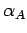

Inhalt Index DeskTop Bronstein

 Geometrie Sphärische Trigonometrie Berechnung sphärischer Dreiecke Orthodrome
Geometrie Sphärische Trigonometrie Berechnung sphärischer Dreiecke Orthodrome


Setzt man den Sinus- und Seitenkosinussatz zur Berechnung von und ein, so ergibt eine Division der Ergebnisse und anschließende Auflösung nach dem Kurswinkel :
Hinweis: Mit den Formeln (3.234a), (3.235), (3.232a) und (3.232b) lassen sich die Koordinaten des nordpolnächsten Punktes einer durch zwei Punkte A und B festgelegten Orthodrome berechnen.